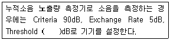
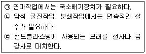
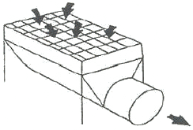
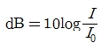
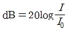
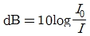
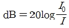

산업위생관리기사 (2019-04-27 기출문제)
1과목: 산업위생학개론
1. 산업안전보건법상 최근 1년간 작업공정에서 공정 설비의 변경, 작업방법의 변경, 설비의 이전, 사용 화학물질의 변경 등으로 작업환경측정 결과에 영향을 주는 변화가 없는 경우 작업공정 내 소음 외의 다른 모든 인자의 작업환경측정 결과가 최근 2회 연속 노출기준 미만인 사업장은 몇 년에 1회 이상 측정할 수 있는가?
- 6월
- 1년
- 2년
- 3년
(정답률: 64%)

2. 해외 국가의 노출기준 연결이 틀린 것은?
- 영국 - WEL(Workplace Exposure Limit)
- 독일 - REL(Recommended Exposure Limit)
- 스웨덴 - OEL(Occupational Exposure Limit)
- 미국(ACGIH) - TLV(Threshold Limit Value)
(정답률: 68%)
3. L5/S1 디스크에 얼마 정도의 압력이 초과되면 대부분의 근로자에게 장해가 나타나는가?
- 3400N
- 4400N
- 5400N
- 6400N
(정답률: 75%)
4. Flex - Time 제도의 설명으로 맞는 것은?
- 하루 중 자기가 편한 시간을 정하여 자유롭게 출ㆍ퇴근 하는 제도
- 주휴 2일제로 주당 40시간 이상의 근무를 원칙으로 하는 제도
- 연중 4주간 년차 휴가를 정하여 근로자가 원하는 시기에 휴가를 갖는 제도
- 작업상 전 근로자가 일하는 중추시간(core time)을 제외하고 주당 40시간 내외의 근로조건하에서 자유롭게 출ㆍ퇴근 하는 제도
(정답률: 87%)
5. 하인리히의 사고연쇄반응 이론(도미노 이론)에서 사고가 발생하기 바로 직전의 단계에 해당하는 것은?
- 개인적 결함
- 사회적 환경
- 선진 기술의 미적용
- 불안전한 행동 및 상태
(정답률: 90%)
6. 화학물질의 국내 노출기준에 관한 설명으로 틀린 것은?
- 1일 8시간을 기준으로 한다.
- 직업병 진단 기준으로 사용할 수 없다.
- 대기오염의 평가나 관리상 지표로 사용할 수 없다.
- 직업성 질병의 이환에 대한 반증자료로 사용할 수 있다.
(정답률: 70%)
7. 사업장에서의 산업보건관리업무는 크게 3가지로 구분될 수 있다. 산업보건관리 업무와 가장 관련이 적은 것은?
- 안전관리
- 건강관리
- 환경관리
- 작업관리
(정답률: 66%)
8. 최근 실내공기질에서 문제가 되고 있는 방사성 물질인 라돈에 관한 설명으로 옳지 않은 것은?
- 무색, 무취, 무미한 가스로 인간의 감각에 의해 감지할 수 없다.
- 인광석이나 산업폐기물을 포함하는 토양, 석재, 각종 콘크리트 등에서 발생할 수 있다.
- 라돈의 감마(γ)-붕괴에 의하여 라돈의 딸핵종이 생성되며 이것이 기관지에 부착되어 감마선을 방출하여 폐암을 유발한다.
- 우라늄 계열의 붕괴과정 일부에서 생성될 수 있다.
(정답률: 73%)
9. 어느 공장에서 경미한 사고가 3건이 발생하였다. 그렇다면 이 공장의 무상해 사고는 몇 건이 발생하는가? (단, 하인리히의 법칙을 활용한다.)
- 25
- 31
- 36
- 40
(정답률: 73%)
10. 인간공학에서 고려해야 할 인간의 특성과 가장 거리가 먼 것은?
- 감각과 지각
- 운동과 근력
- 감정과 생산능력
- 기술, 집단에 대한 적응능력
(정답률: 71%)
11. 산업위생 분야에 종사하는 사람들이 반드시 지켜야 할 윤리강령의 전문가로서의 책임에 대한 설명 중 틀린 것은?
- 기업체의 기밀은 누설하지 않는다.
- 과학적 방법의 적용과 자료의 해석에서 객관성을 유지한다.
- 근로자, 사회 및 전문직종의 이익을 위해 과학적 지식을 공개하고 발표한다.
- 전문적 판단이 타협에 의하여 좌우될 수 있거나 이해관계가 있는 상황에는 적극적으로 개입한다.
(정답률: 88%)
12. 직업성 질환의 범위에 해당되지 않는 것은?
- 합병증
- 속발성 질환
- 선천적 질환
- 원발성 질환
(정답률: 84%)
13. 단기간 휴식을 통해서는 회복될 수 없는 발병단계의 피로를 무엇이라 하는가?
- 곤비
- 정신피로
- 과로
- 전신피로
(정답률: 85%)
14. NIOSH의 권고중량한계(Recommended Weight Limit, RWL)에 사용되는 승수(multiplier)가 아닌 것은?
- 들기거리(Lift Multiplier)
- 이동거리(Distance Multiplier)
- 수평거리(Horizontal Multiplier)
- 비대칭각도(Asymmetry Multiplier)
(정답률: 62%)
15. 인간공학에서 최대작업영역(maximum area)에 대한 설명으로 가장 적절한 것은?
- 허리에 불편 없이 적절히 조작할 수 있는 영역
- 팔과 다리를 이용하여 최대한 도달할 수 있는 영역
- 어깨에서부터 팔을 뻗어 도달할 수 있는 최대 영역
- 상완을 자연스럽게 몸에 붙인 채로 전완을 움직일 때 도달하는 영역
(정답률: 82%)
16. 심리학적 적성검사와 가장 거리가 먼 것은?
- 감각기능검사
- 지능검사
- 지각동작검사
- 인성검사
(정답률: 63%)
17. 한 근로자가 트리클로로에틸렌(TLV 50ppm)이 담긴 탈지탱크에서 금속가공 제품의 표면에 존재하는 절삭유 등의 기름 성분을 제거하기 위해 탈지작업을 수행하였다. 또 이 과정을 마치고 포장단계에서 표면 세척을 위해 아세톤(TLV 500ppm)을 사용하였다. 이 근로자의 작업환경 측정 결과는 트리클로로에틸렌이 45ppm, 아세톤이 100ppm 이었을 때, 노출 지수와 노출기준에 관한 설명으로 맞는 것은? (단, 두 물질은 상가작용을 한다.)
- 노출지수는 0.9이며, 노출기준 미만이다.
- 노출지수는 1.1이며, 노출기준을 초과하고 있다.
- 노출지수는 6.1이며, 노출기준을 초과하고 있다.
- 트리클로로에틸렌의 노출지수는 0.9, 아세톤의 노출지수는 0.2이며, 혼합물로써 노출기준 미만이다.
(정답률: 82%)
18. 산업안전법령상 사무실 공기관리의 관리대상 오염물질의 종류에 해당하지 않는 것은?(관련 규정 개정전 문제로 여기서는 기존 정답인 3번을 누르면 정답 처리됩니다. 자세한 내용은 해설을 참고하세요.)
- 오존(O3)
- 총부유세균
- 호흡성분진(RPM)
- 일산화탄소(CO)
(정답률: 63%)
19. 산업위생 역사에서 영국의 외과의사 Percivall Pott에 대한 내용 중 틀린 것은?
- 직업성 암을 최초로 보고하였다.
- 산업혁명 이전의 산업위생 역사이다.
- 어린이 굴뚝 청소부에게 많이 발생하던 음낭암(scrotal cancer)의 원인물질을 검댕(soot)이라고 규명하였다.
- Pott의 노력으로 1788년 영국에서는 도제 건강 및 도덕법(Health and Morals of Apprentices Act)이 통과되었다.
(정답률: 74%)
20. 젊은 근로자의 약한 쪽 손의 힘은 평균 50kp이고, 이 근로자가 무게 10kg인 상자를 두손으로 들어 올릴 경우에 한 손의 작업강도(%MS)는 얼마인가? (단, 1kp는 질량 1kg을 중력의 크기로 당기는 힘을 말한다.)
- 5
- 10
- 15
- 20
(정답률: 74%)
2과목: 작업위생측정 및 평가
21. 어느 작업장에 9시간 작업시간 동안 측정한 유해인자의 농도는 0.045mg/m3일 때, 95%의 신뢰도를 가진 하한치는 얼마인가? (단, 유해인자의 노출기준은 0.⑤mg/m3, 시료채취 분석오차는 0.132이다.)
- 0.768
- 0.929
- 1.032
- 1.258
(정답률: 42%)
22. 옥내 작업장에서 측정한 건구온도 73℃이고 자연습구온도 65℃, 흑구온도 81℃일 때, 습구흑구온도지수는?
- 64.4℃
- 67.4℃
- 69.8℃
- 71.0℃
(정답률: 81%)
23. 다음 중 수동식 채취기에 적용되는 이론으로 가장 적절한 것은?
- 침강원리, 분산원리
- 확산원리, 투과원리
- 침투원리, 흡착원리
- 충돌원리, 전달원리
(정답률: 67%)
24. 다음 중 흡착관인 실리카겔관에 사용되는 실리카겔에 관한 설명과 가장 거리가 먼 것은?
- 이황화탄소를 탈착용매로 사용하지 않는다.
- 극성 물질을 채취한 경우 물 또는 메탄올을 용매로 쉽게 탈착된다.
- 추출용액이 화학분석이나 기기분석에 방해물질로 작용하는 경우가 많지 않다.
- 파라핀류가 케톤류 보다 극성이 강하기 때문에 실리카겔에 대한 친화력도 강하다.
(정답률: 71%)
25. 다음 중 PVC막 여과지에 관한 설명과 가장 거리가 먼 것은?
- 수분에 대한 영향이 크지 않다.
- 공해성 먼지, 총 먼지 등의 중량분석을 위한 측정에 이용된다.
- 유리규산을 채취하여 X-선 회절법으로 분석하는데 적절하다.
- 코크스 제조공정에서 발생되는 코크스 오븐 배출물질을 채취하는데 이용된다.
(정답률: 73%)
26. 입자상물질의 측정 및 분석방법으로 틀린 것은? (단, 고용노동부 고시를 기준으로 한다.)
- 석면의 농도는 여과채취방법에 의한 계수 방법으로 측정한다.
- 규산염은 분립장치 또는 입자의 크기를 파악할 수 있는 기기를 이용한 여과채취방법으로 측정한다.
- 광물성 분진은 여과채취방법에 따라 석영, 크리스토바라이트, 트리디마이트를 분석할 수 있는 적합한 분석방법으로 측정한다.
- 용접흄은 여과채취방법으로 하되 용접보안면을 착용한 경우에는 그 내부에서 채취하고 중량분석방법과 원자 흡광분광기 또는 유도결합플라즈마를 이용한 분석방법으로 측정한다.
(정답률: 39%)
27. 화학공장의 작업장 내에 먼지 농도를 측정하였더니 5,6,5,6,6,6,4,8,9,8ppm일 때, 측정치의 기하평균은 약 몇 ppm인가?
- 5.13
- 5.83
- 6.13
- 6.83
(정답률: 76%)
28. 어느 작업환경에서 발생되는 소음원 1개의 음압수준이 92dB이라면, 이와 동일한 소음원이 8개일 때의 전체음압수준은?
- 101dB
- 103dB
- 1⑤dB
- 107dB
(정답률: 74%)
29. 다음은 작업장 소음측정에서 관한 고용노동부 고시 내용이다. ( )안에 내용으로 옳은 것은?

- 50
- 60
- 70
- 80
(정답률: 88%)
30. 원자흡광광도계의 구성요소화 역할에 대한 설명 중 옳지 않은 것은?
- 광원은 속빈음극램프를 주로 사용한다.
- 광원은 분석 물질이 반사할 수 있는 표준 파장의 빛을 방출한다.
- 단색화 장치는 특정 파장만 분리하여 검출기로 보내는 역할을 한다.
- 원자화장치에서 원자화방법에는 불꽃방식, 흑연로방식, 증기화방식이 있다.
(정답률: 45%)
31. 고체 흡착제를 이용하여 시료채취를 할 때 영향을 주는 인자에 관한 설명으로 옳지 않은 것은?
- 온도 : 고온일수록 흡착 성질이 감소하며 파과가 일어나기 쉽다.
- 오염물질농도 : 공기 중 오염물질의 농도가 높을수록 파과공기량이 증가한다.
- 흡착제의 크기 : 입자의 크기가 작을수록 채취효율이 증가하나 압력강하가 심하다.
- 시료채취유량 : 시료채취유량이 높으면 파과가 일어나기 쉬우며 코팅된 흡착제일수록 그 경향이 강하다.
(정답률: 47%)
32. 다음 중 조선소에서 용접작업 시 발생 가능한 유해인자와 가장 거리가 먼 것은?
- 오존
- 자외선
- 황산
- 망간 흄
(정답률: 45%)
33. 상온에서 벤젠(C6H6)의 농도 20mg/m3는 부피단위 농도로 약 몇 ppm인가?
- 0.06
- 0.6
- 6
- 60
(정답률: 64%)
34. 다음 중 비누거품방법(Bubble Meter Method)을 이용해 유량을 보정할 때의 주의사항과 가장 거리가 먼 것은?
- 측정시간의 정확성은 ±5초 이내이어야 한다.
- 측정장비 및 유량보정계는 Tygon Tube로 연결한다.
- 보정을 시작하기 전에 충분히 충전된 펌프를 5분간 작동한다.
- 표준뷰렛 내부면을 세척제 용액으로 씻어서 비누거품이 쉽게 상승하도록 한다.
(정답률: 61%)
35. 시료공기를 흡수, 흡착 등의 과정을 거치지 않고 진공채취병 등의 채취용기에 물질을 채취하는 방법은?
- 직접채취방법
- 여과채취방법
- 고체채취방법
- 액체채취방법
(정답률: 80%)
36. 어느 작업장에서 A물질의 농도를 측정 한 겨로가 각각 23.9ppm, 21.6ppm, 22.4ppm, 24.1ppm, 22.7ppm, 25.4ppm을 얻었다. 측정 결과에서 중앙값(median)은 몇 ppm인가?
- 23.0
- 23.1
- 23.3
- 23.5
(정답률: 76%)
37. 소음의 측정방법으로 틀린 것은? (단, 고용노동부 고시를 기준으로 한다.)
- 소음계의 청감보정회로는 A특성으로 한다.
- 소음계 지시침의 동작은 느린(Slow)상태로 한다.
- 소음계의 지시치가 변동하지 않는 경우에는 해당 지시치를 그 측정점에서의 소음수준으로 한다.
- 소음이 1초 이상의 간격을 유지하면서 최대음압수준이 120dB(A) 이상의 소음인 경우에는 소음수준에 따른 10분 동안의 발생횟수를 측정한다.
(정답률: 77%)
38. 온도 표시에 대한 내용으로 틀린 것은? (단, 고용노동부 고시를 기준으로 한다.)
- 미온은 20~30℃를 말한다.
- 온수(溫水)는 60~70℃를 말한다.
- 냉수(冷水)는 15℃이하를 말한다.
- 상온은 15~25℃, 실온은 1~35℃을 말한다.
(정답률: 68%)
39. 작업환경측정대상이 되는 작업장 또는 공정에서 정상적인 작업을 수행하는 동일노출집단의 근로자가 작업하는 장소는? (단, 고용노동부 고시를 기준으로 한다.)
- 동일작업장소
- 단위작업장소
- 노출측정장소
- 측정작업장소
(정답률: 71%)
40. 다음 중 작업환경측정치의 통계처리에 활용되는 변이계수에 관한 설명과 가장 거리가 먼 것은?
- 평균값의 크기가 0에 가까울수록 변이계수의 의의는 작아진다.
- 측정단위와 무관하게 독립적으로 산출되며 백분율로 나타낸다.
- 단위가 서로 다른 집단이나 특성값의 상호 산포도를 비교하는데 이용될 수 있다.
- 편차의 제곱 합들의 평균값으로 통계집단의 측정값들에 대한 균일성, 정밀성 정도를 표현한다.
(정답률: 49%)
3과목: 작업환경관리대책
41. 다음 중 오염물질을 후드로 유입하는데 필요한 기류의 속도인 제어속도에 영향을 주는 인자와 가장 거리가 먼 것은?
- 덕트의 재질
- 후드의 모양
- 후드에서 오염원까지의 거리
- 오염물질의 종류 및 확산상태
(정답률: 74%)
42. 다음 중 국소배기장치에 관한 주의사항과 가장 거리가 먼 것은?
- 유독물질의 경우에는 굴뚝에 흡인장치를 보강할 것
- 흡인되는 공기가 근로자의 호흡기를 거치지 않도록 할 것
- 배기관은 유해물질이 발산하는 부위의 공기를 모두 흡입할 수 있는 성능을 갖출 것
- 먼지를 제거할 때에는 공기속도를 조절하여 배기관 안에서 먼지가 일어나도록 할 것
(정답률: 78%)
43. 송풍기에 관한 설명으로 옳은 것은?
- 풍량은 송풍기의 회전수에 비례한다.
- 동력은 송풍기의 회전수의 제곱에 비례한다.
- 풍력은 송풍기의 회전수의 세제곱에 비례한다.
- 풍압은 송풍기의 회전수의 세제곱에 비례한다.
(정답률: 71%)
44. 정압이 3.5cmH2O인 송풍기의 회전속도를 180rpm에서 360rpm으로 증가시켰다면, 송풍기의 정압은 약 몇 cmH2O인가? (단, 기타 조건은 같다고 가정한다.)
- 16
- 14
- 12
- 10
(정답률: 68%)
45. 입자의 침강속도에 대한 설명으로 틀린 것은? (단, 스토크스 식을 기준으로 한다.)
- 입자직경의 제곱에 비례한다.
- 공기와 입자 사이의 밀도차에 반비례한다.
- 중력가속도에 비례한다.
- 공기의 점섬계수에 반비례한다.
(정답률: 72%)
46. 환기시설 내 기류가 기본적인 유체역학적 원리에 따르기 위한 전제조건과 가장 거리가 먼 것은?
- 공기는 절대습도를 기준으로 한다.
- 환기시설 내외의 열교환은 무시한다.
- 공기의 압축이나 팽창은 무시한다.
- 공기 중에 포함된 유해물질의 무게와 용량을 무시한다.
(정답률: 69%)
47. 작업환경의 관리원칙인 대체 중 물질의 변경에 따른 개선 예와 가장 거리가 먼 것은?
- 성냥 제조 시 황린 대신 적린을 사용하였다.
- 세척작업에서 사염화탄소 대신 트리클로로에틸렌을 사용하였다.
- 야광시계의 자판에서 인 대신 라듐을 사용하였다.
- 보온 재료 사용에서 석면 대신 유리섬유를 사용하였다.
(정답률: 80%)
48. 다음 중 작업환경개선을 위해 전체 환기를 적용할 수 있는 상황과 가장 거리가 먼 것은?
- 오염발생원의 유해물질 발생량이 적은 경우
- 작업자가 근무하는 장소로부터 오염발생원이 멀리 떨어져 있는 경우
- 소량의 오염물질이 일정속도로 작업장으로 배출되는 경우
- 동일작업장에 오염발생원이 한군데로 집중되어 있는 경우
(정답률: 81%)
49. 20℃의 송풍관 내부에 480m/min으로 공기가 흐르고 있을 때, 속도압은 약 몇 mmH2O인가? (단, 0℃ 공기 밀도는 1.296kg/m3로 가정한다.)
- 2.3
- 3.9
- 4.5
- 7.3
(정답률: 40%)
50. 체적이 1000m3이고 유효환기량이 50m3/min인 작업장에 메틸클로로포름 증기가 발생하여 100ppm의 상태로 오염되었다. 이 상태에서 증기발생이 중지되었다면 25ppm까지 농도를 감소시키는데 걸리는 시간은?
- 약 17분
- 약 28분
- 약 32분
- 약 41분
(정답률: 61%)
51. 다음은 분진발생 작업환경에 대한 대책이다. 옳은 것을 모두 고른 것은?

- ㉠, ㉡
- ㉡, ㉢
- ㉠, ㉢
- ㉠, ㉡, ㉢
(정답률: 73%)
52. 보호 장구의 재질과 대상 화학물질이 잘못 짝지어진 것은?
- 부틸고무 - 극성용제
- 면 - 고체상 물질
- 천연고무(latex) - 수용성 용액
- Vitron - 극성용제
(정답률: 68%)
53. 다음 그림이 나타내는 국소배기장치의 후드 형식은?

- 측방형
- 포위형
- 하방형
- 슬롯형
(정답률: 72%)
54. 후드로부터 0.25m 떨어진 곳에 있는 공정에서 발생되는 먼지를, 제어속도가 5m/s, 후드직경이 0.4m인 원형 후드를 이용하여 제거할 때, 필요 환기량은 약 몇 m3/min인가? (단,프랜지 등 기타 조건은 고려하지 않음)
- 2⑤
- 215
- 225
- 235
(정답률: 60%)
55. 슬로트 후드에서 슬로트의 역할은?
- 제어속도를 감소시킨다.
- 후드 제작에 필요한 재료를 절약한다.
- 공기가 균일하게 흡입되도록 한다.
- 제어속도를 증가시킨다.
(정답률: 77%)
56. 1기압에서 혼합기체가 질소(N2) 50vol%, 산소(O2)20vol%, 탄산가스 30vol%로 구성되어 있을 때, 질소(N2)의 분압은?
- 380mmHg
- 228mmHg
- 152mmHg
- 740mmHg
(정답률: 69%)
57. 어떤 작업장의 음압수준이 80dB(A)이고 근로자가 NRR이 19인 귀마개를 착용하고 있다면, 차음효과는 몇 dB(A)인가? (단, OSHA 방법 기준)
- 4
- 6
- 60
- 70
(정답률: 75%)
58. 방진마스크에 관한 설명으로 옳지 않은 것은?
- 일반적으로 활성탄 필터가 많이 사용된다.
- 종류에는 격리식, 직결식, 면체여과식이 있다.
- 흡기저항 상승률은 낮은 것이 좋다.
- 비휘발성 입자에 대한 보호가 가능하다.
(정답률: 66%)
59. 작업장에서 Methylene chloride(비중=1.336, 분자량=84.94, TLV=500ppm)를 500g/hr를 사용할 때, 필요한 환기량은 약 몇 m3/min인가? (단, 안전계수는 7이고, 실내온도는 21℃이다.)
- 26.3
- 33.1
- 42.0
- 51.3
(정답률: 49%)
60. 흡인 풍량이 200m3/min, 송풍기 유효전압이 150mmH2O, 송풍기 효율이 80%인 송풍기의 소요 동력은?
- 3.5kW
- 4.8kW
- 6.1kW
- 9.8kW
(정답률: 68%)
4과목: 물리적유해인자관리
61. 작업장에서 사용하는 트리클로로에틸렌을 독성이 강한 포스겐으로 전환시킬 수 있는 광화학 작용을 하는 유해 광선은?
- 적외선
- 자외선
- 감마선
- 마이크로파
(정답률: 56%)
62. 다음 중 투과력이 커서 노출 시 인체 내부에도 영향을 미칠 수 있는 방사선의 종류는?
- γ선
- α선
- β선
- 자외선
(정답률: 73%)
63. 산업안전보건법령상, 소음의 노출기준에 따르면 몇 dB(A)의 연속소음에 노출되어서는 안되는가? (단, 충격소음은 제외한다.)
- 85
- 90
- 100
- 115
(정답률: 51%)
64. 인공호흡용 혼합가스 중 헬륨 - 산소 혼합가스에 관한 설명으로 틀린 것은?
- 헬륨은 고압하에서 마취작용이 약하다.
- 헬륨은 분자량이 작아서 호흡저항이 적다.
- 헬륨은 질소보다 확산속도가 작아 인체 흡수속도를 줄일 수 있다.
- 헬륨은 체외로 배출되는 시간이 질소에 비하여 50%정도 밖에 걸리지 않는다.
(정답률: 65%)
65. 개인의 평균 청력 손실을 평가하기 위하여 6분법을 적용하였을 때, 500Hz에서 6dB, 1000Hz에서 10dB, 2000Hz에서 10dB, 4000Hz에서 20dB이면 이때의 청력 손실을 얼마인가?
- 10dB
- 11dB
- 12dB
- 13dB
(정답률: 64%)
66. 옥타브밴드로 소음의 주파수를 분석하였다. 낮은 쪽의 주파수가 250Hz이고, 높은 쪽의 주파수가 2배인 경우 중심주파수는 약 몇 Hz인가?
- 250
- 300
- 354
- 375
(정답률: 44%)
67. 다음 중 체온의 상승에 따라 체온조절중추인 시상하부에서 혈액온도를 감지하거나 신경망을 통하여 정보를 받아 들여 체온 방산작용이 활발해지는 작용은?
- 정신적 조절작용(spiritual thermo regulation)
- 물리적 조절작용(physical thermo regulation)
- 화학적 조절작용(chemical thermo regulation)
- 생물학적 조절작용(biological thermo regulation)
(정답률: 54%)
68. 질소마취 증상과 가장 연관이 많은 작업은?
- 잠수작업
- 용접작업
- 냉동작업
- 금속제조작업
(정답률: 79%)
69. 사무실 책상면으로부터 수직으로 1.4m의 거리에 1000cd(모든 방향으로 일정하다.)의 광도를 가지는 광원이 있다. 이 광원에 대한 책상에서의 조도(intensity of illumination, Lux)는 약 얼마인가?
- 410
- 444
- 510
- 544
(정답률: 57%)
70. 이상기압과 건강장해에 대한 설명으로 맞는 것은?
- 고기압 조건은 주로 고공에서 비행업무에 종사하는 사람에게 나타나며 이를 다루는 학문을 항공의학 분야이다.
- 고기압 조건에서의 건강장해는 주로 기후의 변화로 인한 대기압의 변화 때문에 발생하며 휴식이 가장 좋은 대책이다.
- 고압 조건에서 급격한 압력저하(감압)과정은 혈액과 조직에 녹아있던 질소가 기포를 형성하여 조직과 순환기계 손상을 일으킨다.
- 고기압 조건에서 주요 건강장해 기전은 산소부족이므로 일차적인 응급치료는 고압산소실에서 치료하는 것이 바람직하다.
(정답률: 65%)
71. 다음 중 단기간 동안 자외선(UV)에 초과 노출될 경우 발생할 수 있는 질병은?
- Hypothermia
- Welder's flash
- Phossy jaw
- White fingers syndrome
(정답률: 73%)
72. 일반적으로 전신진동에 의한 생체반응에 관여하는 인자로 가장 거리가 먼 것은?
- 온도
- 강도
- 방향
- 진동수
(정답률: 71%)
73. 저기압 환경에서 발생하는 증상으로 옳은 것은?
- 이산화탄소에 의한 산소중독증상
- 폐 압박
- 질소마취 증상
- 우울감, 두통, 식욕상실
(정답률: 59%)
74. 다음 중 진동에 의한 장해를 최소화시키는 방법과 거리가 먼 것은?
- 진동의 발생원을 격리시킨다.
- 진동의 노출시간을 최소화시킨다.
- 훈련을 통하여 신체의 적응력을 향상시킨다.
- 진동을 최소화하기 위하여 공학적으로 설계 및 관리한다.
(정답률: 84%)
75. 전리방사선에 대한 감수성이 가장 큰 조직은?
- 간
- 골수세포
- 연골
- 신장
(정답률: 78%)
76. 고온환경에 노출된 인체의 생리적 기전과 가장 거리가 먼 것은?
- 수분부족
- 피부혈관확장
- 근육이완
- 갑상선자극호르몬 분비증가
(정답률: 75%)
77. 현재 총흡음량이 1000sabins인 작업장에 흡음를 보강하여 4000sabins을 더할 경우, 총 소음감소는 약 얼마인가? (단, 소수점 첫째자리에서 반올림)
- 5dB
- 6dB
- 7dB
- 8dB
(정답률: 61%)
78. 빛 또는 밝기와 관련된 단위가 아닌 것은?
- weber
- candela
- lumen
- footlambert
(정답률: 73%)
79. 다음 중 음의 세기라벨을 나타내는 dB의 계산식으로 옳은 것은? (단, I0=기준음향의 세기, I=발생음의 세기)




(정답률: 64%)
80. 참호족에 관한 설명으로 맞는 것은?
- 직장온도가 35℃ 수준 이하로 저하되는 경우를 의미한다.
- 체온이 35~32.2℃에 이르면 신경학적 억제증상으로 운동실조, 자극에 대한 반응도 저하와 언어이상 등이 온다.
- 27℃에서는 떨림이 멎고 혼수에 빠지게 되고, 25~23℃이르면 사망하게 된다.
- 근로자의 발이 한랭에 장기간 노출됨과 동시에 지속적으로 습기나 물에 잠기게 되면 발생한다.
(정답률: 75%)
5과목: 산업독성학
81. 다음 중 생물학적 모니터링에서 사용되는 약어의 의미가 틀린 것은?
- B- background, 직업적으로 노출되지 않은 근로자의 검체에서 동일한 결정인자가 검출될 수 있다는 의미
- Sc- susceptibiliy(감수성), 화학물질의 영향으로 감수성이 커질 수 도 있다는 의미
- Nq - nonqualitative, 결정인자가 동 화학물질에 노출되었다는 지표일 뿐이고 측정치를 정량적으로 해석하는 것은 곤란하다는 의미
- Ns - nonspecific(비특이적), 특정 화학물질 노출에서 뿐만 아니라 다른 화학물질에 의해서도 이 결정인자가 나타날 수 있다는 의미
(정답률: 58%)
82. 다음 중 직업성 피부질환에 관한 설명으로 틀린 것은?
- 가장 빈번한 직업성 피부질환은 접촉성 피부염이다.
- 알레르기성 접촉 피부염은 일반적인 보호 기구로도 개선 효과가 좋다.
- 첩포시험은 알레르기성 접촉 피부염의 감작물질을 색출하는 임상시험이다.
- 일부 화학물질과 식물은 광선에 의해서 활성화되어 피부반응을 보일 수 있다.
(정답률: 71%)
83. 노말헥산이 체내 대사과정을 거쳐 변환되는 물질로, 노말헥산에 폭로된 근로자의 생물학적 노출지표로 이용되는 물질로 옳은 것은?
- hippuric acid
- 2,5 - hexanedione
- hydroquonone
- 9 - hydroxyquinoline
(정답률: 80%)
84. 다음 중 석면작업의 주의사항으로 적절하지 않은 것은?
- 석면 등을 사용하는 작업은 가능한 한 습식으로 하도록 한다.
- 석면을 사용하는 작업장이나 공정 등은 격리시켜 근로자의 노출을 막는다.
- 근로자가 상시 접근할 필요가 없는 석면취급설비는 밀폐실에 넣어 양압을 유지한다.
- 공정상 밀폐가 곤란한 경우, 적절한 형식과 기능을 갖춘 국소배기장치를 설지한다.
(정답률: 75%)
85. 다음 중 카드뮴의 중독, 치료 및 예방대책에 관한 설명으로 틀린 것은?
- 소변 속의 카드뮴 배설량은 카드뮴 흡수를 나타내는 지표가 된다.
- BAL 또는 Ca-EDTA등을 투여하여 신장에 대한 독작용을 제거한다.
- 칼슘대사에 장해를 주어 신결석을 동반한 증후군이 나타나고 다량의 칼슘배설이 일어난다.
- 폐활량 감소, 잔기량 증가 및 호흡곤란의 폐증세가 나타나며, 이 증세는 노출기간과 노출농도에 의해 좌우된다.
(정답률: 77%)
86. 산업독성학에서 LC50의 설명으로 맞는 것은?
- 실험동물의 50%가 죽게 되는 양이다.
- 실험동물의 50%가 죽게 되는 농도이다.
- 실험동물의 50%가 살아남을 비율이다.
- 실험동물의 50%가 살아남을 확률이다.
(정답률: 68%)
87. 다음 중 크롬에 관한 설명으로 틀린 것은?
- 6가 크롬은 발암성물질이다.
- 주로 소변을 통하여 배설된다.
- 형광등 제조, 치과용 아말감 산업이 원인이 된다.
- 만성 크롬중독인 경우 특별한 치료방법이 없다.
(정답률: 57%)
88. 납중독을 확인하기 위한 시험방법과 가장 거리가 먼 것은?
- 혈액 중 납 농도 측정
- 헴(Heme)합성과 관련된 효소의 혈중농도 측정
- 신경정달속도 측정
- β-ALA이동 측정
(정답률: 62%)
89. 동물실험에서 구해진 역치량을 사람에게 외삽하여 "사람에게 안전한 양"으로 추정한 것을 SHD(Safe Human Dose)라고 하는데 SHD 계산에 필요하지 않는 항목은?
- 배설률
- 노출시간
- 호흡률
- 폐흡수비율
(정답률: 70%)
90. 자동차 정비업체에서 우레탄 도료를 사용하는 도장작업 근로자에게서 직업성 천식이 발생되었을 때, 원인 물질로 추측할 수 있는 것은?
- 시너(thinner)
- 벤젠(benzene)
- 크실렌(Xylene)
- TDI(Toluene diisocyanate)
(정답률: 69%)
91. 다음 중 유해물질의 독성 또는 건강영향을 결정하는 인자로 가장 거리가 먼 것은?
- 작업강도
- 인체 내 침입경로
- 노출농도
- 작업장 내 근로자수
(정답률: 76%)
92. 소변 중 화학물질 A의 농도는 28mg/mL, 단위시간(분)당 배설되는 소변의 부피는 1.5mL/min, 혈장 중 화학물질 A의 농도가 0.2mg/mL라면 단위시간(분)당 화학물질 A의 제거율(mL/min)은 얼마인가?
- 120
- 180
- 210
- 250
(정답률: 50%)
93. 다음 중 피부의 색소침착(pigmentation)이 가능한 표피층 내의 세포는?
- 기저세포
- 멜라닌세포
- 각질세포
- 피하지방세포
(정답률: 85%)
94. 다음 중 조혈장해를 일으키는 물질은?
- 납
- 망간
- 수은
- 우라늄
(정답률: 65%)
95. 다음 중 다핵방향족 탄화수소(PAHs)에 대한 설명으로 틀린 것은?
- 철강제조업의 석탄 건류공정에서 발생된다.
- PAHs의 대사에 관여하는 효소는 시토크롬 P-448이다.
- PAHs의 배설을 쉽게 하기 위하여 수용성으로 대사된다.
- 벤젠고리가 2개 이상인 것으로 톨루엔이나 크실렌 등이 있다.
(정답률: 58%)
96. 다음 중 납중독의 주요 증상에 포함되지 않는 것은?
- 혈중의 methallothionein 증가
- 적혈구내 protoporphyrin 증가
- 혈색소량 저하
- 혈청내 철 증가
(정답률: 62%)
97. 화학적 질식제(chemical asphyxiant)에 심하게 노출되었을 경우 사망에 이르게 되는 이유로 적절한 것은?
- 폐에서 산소를 제거하기 때문
- 심장의 기능을 저하시키기 때문
- 폐속으로 들어가는 산소의 활용을 방해하기 때문
- 신진대사 기능을 높여 가용한 산소가 부족해지기 때문
(정답률: 80%)
98. 다음 중 유해화학물질에 의한 간의 중요한 장해인 중심소엽성 괴사를 일으키는 물질로 옳은 것은?
- 수은
- 사염화탄소
- 이황화탄소
- 에틸렌글리콜
(정답률: 73%)
99. 다음 중 유해물질의 흡수에서 배설까지의 과정에 대한 설명으로 옳지 않은 것은?
- 흡수된 유해물질은 원래의 형태든, 대사산물의 형태로든 배설되기 위하여 수용성으로 대사된다.
- 흡수된 유해화학물질은 다양한 비특이적 효소에 의한 유해물질의 대사로 수용성이 증가되어 체외로의 배출이 용이하게 된다.
- 간은 화학물질을 대사시키고 콩팥과 함께 배설시키는 기능을 담당하여, 다른 장기보다도 여러 유해물질의 농도가 낮다.
- 유해물질은 조직에 분포되기 전에 먼저 몇 개의 막을 통과하여야 하며, 흡수속도는 유해물질의 물리화학적 성상과 막의 특성에 따라 결정된다.
(정답률: 74%)
100. 다음 중 중금속에 의한 폐기능의 손상에 관한 설명으로 틀린 것은?
- 철폐증(siderosis)은 철분진 흡입에 의한 암 발생(A1)이며, 중피종고 관련이 없다.
- 화학적 폐렴은 베릴륨, 산화카드뮴 에어로졸 노출에 의하여 발생하며 발열,기침, 폐기종이 동반된다.
- 금속열은 금속이 용융점 이상으로 가열될 때 형성되는 산화금속을 흄 형태로 흡입할 경우 발생한다.
- 6가 크롬은 폐암과 비강함 유발인자로 작용한다.
(정답률: 63%)